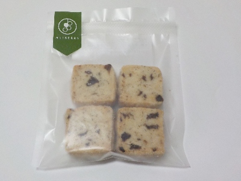

桑友まるベリーのディアマンレザン。
2024/04/28

聞きなれない名前の商品ですね。細かいレーズンが入ったクッキーです。
焼いてて香ばしい感じのレーズンが美味しかったです。
クッキー自体も程よい甘さで、素材の味がして美味しかったです。
岡山産小麦、北海道産生乳使用のバター、島根県産卵、有機アーモンドプードル、有機ぶどうを使っているのがいいのかな？
島根県松江市天神町93
2024/04/28

聞きなれない名前の商品ですね。細かいレーズンが入ったクッキーです。
焼いてて香ばしい感じのレーズンが美味しかったです。
クッキー自体も程よい甘さで、素材の味がして美味しかったです。
岡山産小麦、北海道産生乳使用のバター、島根県産卵、有機アーモンドプードル、有機ぶどうを使っているのがいいのかな？